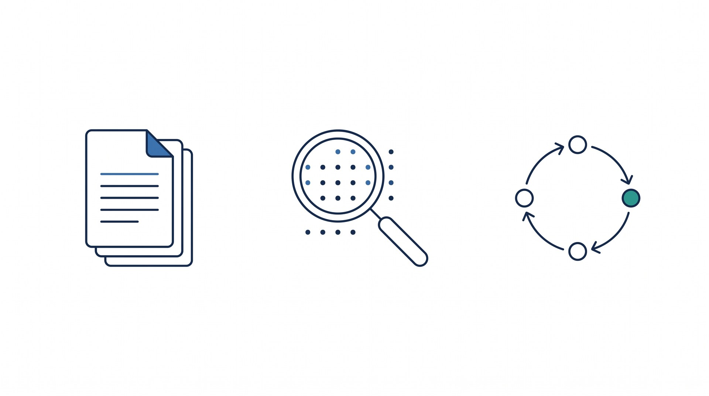
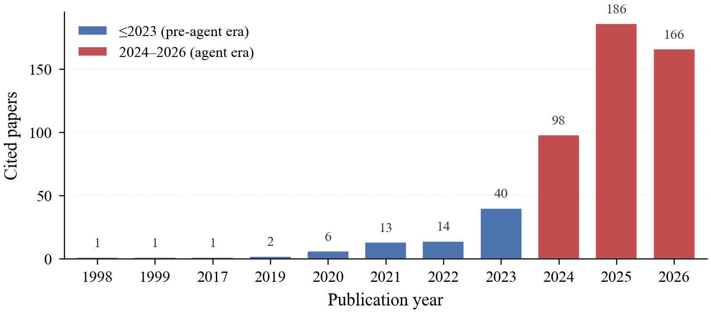
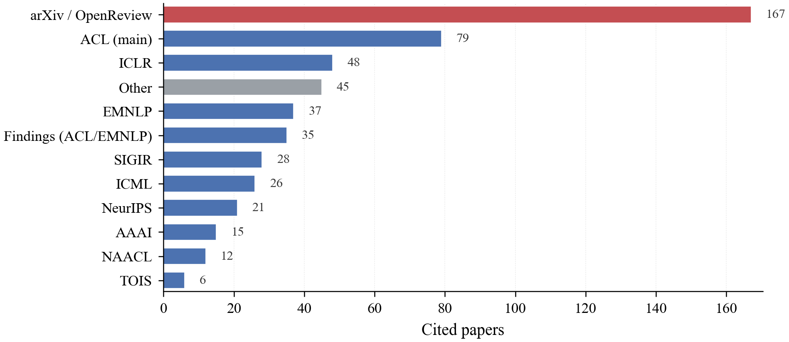

A question-driven survey from components to adaptive control: evidence is followed through six components of the RAG pipeline, and the analysis asks when the coordination itself must become adaptive — revising decisions in response to intermediate results.
NetEase Fuxi AI SG Lab · Singapore · hengchang.hu@oc.netease.com
Four moves: fix the unit of analysis at the component level, give design choices a shared language, follow each component’s agentification up to adaptive control, and account for every record that enters or leaves the library.
The survey is organized by 66 numbered questions, each anchoring a subsection and answered in place. Every claim attaches to a question rather than to a running list of systems.
Query, Datastore, Retriever, Retrieved Results, Generator, Response. Each is analyzed through the object it handles, the bottleneck that object creates, and the method families that address it.
Routing, looping, planning; hierarchy, graphs, agent-written memory; post-hoc, intrinsic, process-level verification. A descriptive vocabulary for configurations — not a ladder every system must climb.
1,118 records entered the library, 295 duplicates were removed, and Appendix B documents every screening decision — including what the available record does not establish.

Chapters 3, 4, 6 and 7 argue by question: each numbered question anchors a subsection and is answered there. Focal questions structure the synthesis; open questions mark what the field has not settled. Numbering follows the PDF.
No question matches that filter.
Rendered from the manuscript’s own sources: each card quotes the question verbatim and links back to its chapter.
Component-level analysis needs a shared vocabulary. Six W-questions and one H-question capture the decisions at each stage; three axes with four positions each describe how far a system has moved from a fixed pipeline toward adaptive control.
| Design question | Query | Datastore | Retriever | Retr. Results | Generator | Response |
|---|---|---|---|---|---|---|
| W1 · When to retrieve? | ✓ | ✓ | ||||
| W2 · What evidence? | ✓ | ✓ | ✓ | |||
| W3 · What query form? | ✓ | |||||
| W4 · Where to retrieve? | ✓ | ✓ | ||||
| W5 · Which retriever? | ✓ | ✓ | ||||
| W6 · Which generator? | ✓ | |||||
| H · How to inject evidence? | ✓ | ✓ |
Across 35 mapped representative methods, autonomy has outrun verification and structure concentrates where autonomy is limited: 9 of 14 methods at the planning position carry intrinsic-or-stronger quality control (64%), versus 4 of 21 below it (19%); only 1 of 14 (7%) reaches graph-or-memory organization, versus 9 of 21 (43%). The vocabulary’s value is making such asymmetries explicit — and pointing at the configurations where they break down.
The survey’s reading library was screened and tagged by cluster, venue and year. The figures below are the paper’s own view of that coverage.


The companion catalog holds 1,049 screened papers — every one tagged by cluster, venue and year, with abstracts and reading notes shipped in the repository. Search it right here, or open the full catalog for filters.
Loading the catalog…
Found a missing paper, a wrong venue, or a cluster tag that looks off? Corrections are welcome by email.
Sources, bibliography and artifact code are released together; the repository links go live when the paper does.
@article{hu2026agentera,
title = {Retrieval-Augmented Generation in the Agent Era:
A Question-Driven Survey from Components to
Adaptive Control},
author = {Hu, Hengchang},
journal = {arXiv preprint},
year = {2026}
}{kind=link}
{kind=link}